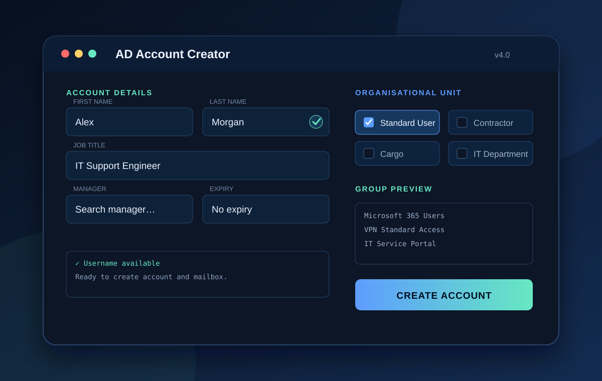

Featured automation project
AD Account Creator
A configurable desktop tool designed to make Active Directory account creation faster, more consistent and easier to audit.
- Problem
- Manual account creation involved repetitive data entry, inconsistent group assignment and several disconnected admin steps.
- Technical work
- Built a modern GUI with live username checks, OU selection, manager search, template-user group copying and Exchange mailbox support.